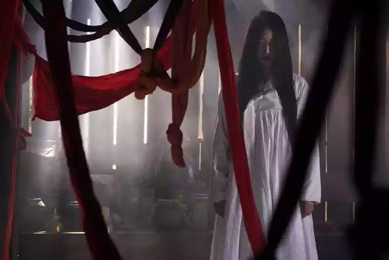

Cheonyeo Gwishin (처녀 귀신) is a Korean ghost in the form of a long haired woman in white. In Korean legend, young women who die in a virgin will be ashamed of being a virgin. Therefore, the appearance of a ghost of a woman will appear around her relatives and friends. This ghost is described as having long hair, pale white face, and bleeding from his mouth. Cheonyeo Gwishin also wears a white shirt (Korean traditional dress called Hanbok).
Because the mission of his life to get married is not fulfilled, it is impossible for him to cross into the world of spirits. The only way to eliminate the ghostly appearance of Cheohyeo Gwishin is to perform a ritual of exorcism or to marry a virgin ghost (Cheonyeo Gwishin) with a bachelor ghost (Mongdal Gwishin). Because the mission of his life to get married is not fulfilled, it is impossible for him to cross into the world of spirits. The only way to eliminate the ghostly appearance of Cheohyeo Gwishin is to perform a ritual of exorcism or to marry a virgin ghost (Cheonyeo Gwishin) with a bachelor ghost (Mongdal Gwishin).